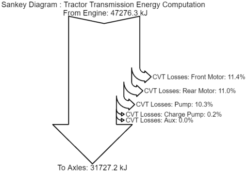
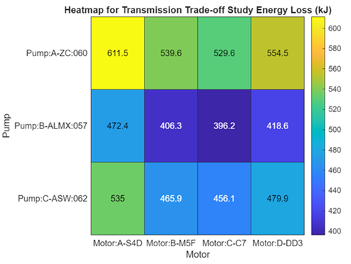
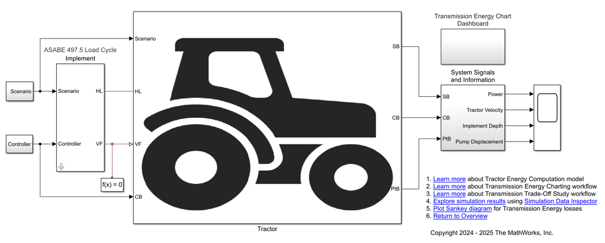
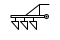
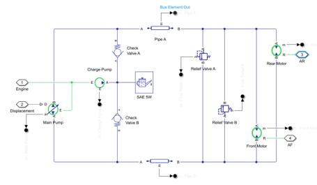

Overview
This project contains custom libraries, models, and code to help you model
tractors. You can learn to evaluate transmission losses and visualize energy
charts for a tractor.
Tractor design is an important step to boost efficiency in the agriculture.
Developing a tractor model that interacts with the environment requires an
accurate model of tire-soil dynamics that includes interaction of tractive
elements such as tire and implement with soil, which is a complicated problem
to solve. You can accelerate the development process by starting with a
system-level analysis to evaluate the options. This project shows how to
create a system-level tractor model using Simscape™, Simscape Driveline™,
and Simscape Fluids™.
Get Started
Double-click on the TractorSimscape PRJ file (in the root folder) to setup the project and get started.
Workflow
Click on the hyperlinks to navigate to the application workflows or live-scripts.
Energy Charting

Create Transmission Energy Charting
Compute transmission losses and visualize energy flow from engine to wheels using a Sankey diagram.
Trade-Off Study

Transmission Trade-Off Study
Select transmission line hydraulic components from various available parts that minimize energy consumption for a given agricultural drive cycle.
Model
The tractor energy computation model uses parameterized custom components and library blocks from Simscape Foundation and Simscape Driveline to simulate a tractor performing tillage operations.

Tractor Energy Computation Model
System-level tractor model for tillage operation with energy computation and visualization.
Components
The project contains custom library blocks and subsystem references that serve as early-stage design components for the development of a fast running system-level tractor model. The custom library blocks use the Simscape language framework. You can parameterize the custom components to suit your application.
Tractor

Tire-Soil Interaction
Custom block representing tire-soil interaction based on Bekker equation. Includes tractive effort with slip, compaction, and flexing effects.

Implement
Custom implement block that models the load applied to the tractor during tillage operations.

Hydrostatic CVT
Subsystem reference implementing a hydrostatic continuously variable transmission (CVT) for the tractor powertrain.
Testing
To learn more about the testing used in this project for components and workflows, see Testing Framework Documentation. You can run different built in tests by going to MATLAB project tool strip and selecting Run Build.
Requirements
This project requires:
1. MATLAB®
2. MATLAB Test™
3. Simulink®
4. Simscape™
5. Simscape Driveline™
6. Simscape Fluids™
Copyright 2024 - 2026 The MathWorks, Inc.